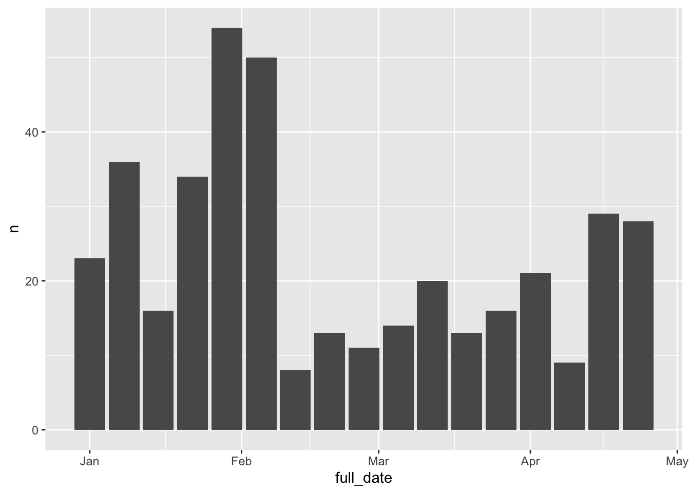
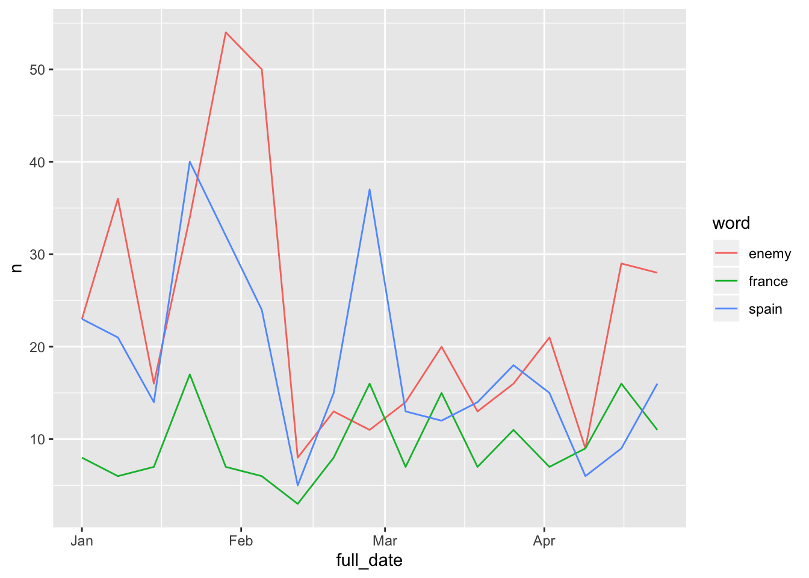
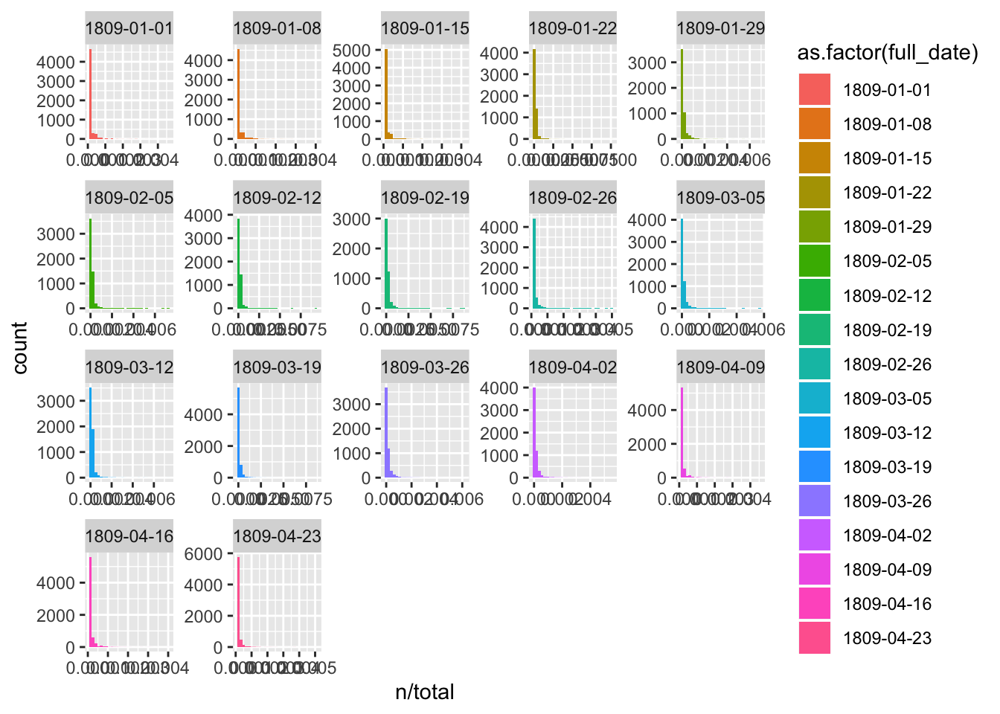

9 Term Frequencies
Use the dataframe to get lists of top words, separated by date/issue etc.
The data frame has a row per article. This is a really easy format to do text mining with, using the techniques from here: https://www.tidytextmining.com/
## Observations: 621
## Variables: 7
## $ article_code <int> 1, 2, 3, 4, 5, 6, 7, 8, 9, 10, 11, 12, 13, 14, 15, 16, 1…
## $ art <chr> "0001", "0002", "0003", "0005", "0007", "0008", "0009", …
## $ text <chr> ":THE NATIONAL REGIS .. _. •f.4r)i ,"•)'; 1 S…
## $ title <chr> "0002644", "0002644", "0002644", "0002644", "0002644", "…
## $ year <chr> "1809", "1809", "1809", "1809", "1809", "1809", "1809", …
## $ date <chr> "0101", "0101", "0101", "0101", "0101", "0101", "0101", …
## $ full_date <date> 1809-01-01, 1809-01-01, 1809-01-01, 1809-01-01, 1809-01…Most analysis involves tokenising the text. This divides the text into ‘tokens’ - representing one unit. A unit is often a word, but could be a bigram - a sequence of two consecutive words, or a trigram, a sequence of three consecutive words. With the library tidytext, this is done using a function called unnest_tokens(). This will split the column containing the text of the article into a long dataframe, with one word per row.
The two most important arguments to ``unnest_tokensareoutputandinput```. This is fairly self explanatory. Just pass it the name you would like to give the new column of words (or n-grams) and the column you’d like to split up: in this case the original column is called ‘text’, and we’d like our column of words to be called words.
## # A tibble: 467,021 x 7
## article_code art title year date full_date word
## <int> <chr> <chr> <chr> <chr> <date> <chr>
## 1 1 0001 0002644 1809 0101 1809-01-01 the
## 2 1 0001 0002644 1809 0101 1809-01-01 national
## 3 1 0001 0002644 1809 0101 1809-01-01 regis
## 4 1 0001 0002644 1809 0101 1809-01-01 f
## 5 1 0001 0002644 1809 0101 1809-01-01 4r
## 6 1 0001 0002644 1809 0101 1809-01-01 i
## 7 1 0001 0002644 1809 0101 1809-01-01 34
## 8 1 0001 0002644 1809 0101 1809-01-01 1
## 9 1 0001 0002644 1809 0101 1809-01-01 style
## 10 1 0001 0002644 1809 0101 1809-01-01 superscript
## # … with 467,011 more rowsI can also specify an argument for token, allowing me to split the text into sentences, characters, lines, or n-grams.If I split into n-grams, I used the argument n to specify how many consecutive words I’d like to use.
Like this:
## # A tibble: 465,872 x 7
## article_code art title year date full_date word
## <int> <chr> <chr> <chr> <chr> <date> <chr>
## 1 1 0001 0002644 1809 0101 1809-01-01 the national regis
## 2 1 0001 0002644 1809 0101 1809-01-01 national regis f
## 3 1 0001 0002644 1809 0101 1809-01-01 regis f 4r
## 4 1 0001 0002644 1809 0101 1809-01-01 f 4r i
## 5 1 0001 0002644 1809 0101 1809-01-01 4r i 34
## 6 1 0001 0002644 1809 0101 1809-01-01 i 34 1
## 7 1 0001 0002644 1809 0101 1809-01-01 34 1 style
## 8 1 0001 0002644 1809 0101 1809-01-01 1 style superscript
## 9 1 0001 0002644 1809 0101 1809-01-01 style superscript l
## 10 1 0001 0002644 1809 0101 1809-01-01 superscript l style
## # … with 465,862 more rowsBefore we do any counting, there’s a couple more processing steps. I’m going to remove ‘stop words’. Stop words are very frequently-used words which often crowd out more interesting results. This isn’t always the case, and you shoudln’t just automatically get rid of them, but rather think about what it is yo uare looking for. For this tutorial, though, the results will be more interesting if it’s not just a bunch of ‘the’ and ‘at’ and so forth.
This is really easy. We load a dataframe of stopwords, which is included in the tidytext package.
Next use the function anti_join(). This bascially removes any word in our word list which is also in the stop words list
## Joining, by = "word"## # A tibble: 222,078 x 7
## article_code art title year date full_date word
## <int> <chr> <chr> <chr> <chr> <date> <chr>
## 1 1 0001 0002644 1809 0101 1809-01-01 national
## 2 1 0001 0002644 1809 0101 1809-01-01 regis
## 3 1 0001 0002644 1809 0101 1809-01-01 4r
## 4 1 0001 0002644 1809 0101 1809-01-01 34
## 5 1 0001 0002644 1809 0101 1809-01-01 1
## 6 1 0001 0002644 1809 0101 1809-01-01 style
## 7 1 0001 0002644 1809 0101 1809-01-01 superscript
## 8 1 0001 0002644 1809 0101 1809-01-01 style
## 9 1 0001 0002644 1809 0101 1809-01-01 superscript
## 10 1 0001 0002644 1809 0101 1809-01-01 l2o
## # … with 222,068 more rowsA couple of words from the .xml have managed to sneak through our text processing: ‘style’ and ‘superscript’. I’m also going to remove these, plus a few more common OCR errors for the word ‘the’.
I’m also going to remove any word with two or less characters, and any numbers. Again, these are optional steps.
I’ll store the dataframe as a variable called ‘tokenised_news_sample’. I’ll also save it using save(), which turns it into an .rdata file, which can be used later.
tokenised_news_sample = news_sample_dataframe %>%
unnest_tokens(output = word, input = text) %>%
anti_join(stop_words) %>%
filter(!word %in% c('superscript', 'style', 'de', 'thle', 'tile', 'tie', 'tire', 'tiie', 'tue')) %>%
filter(!str_detect(word, '[0-9]{1,}')) %>%
filter(nchar(word) > 2)## Joining, by = "word"Now I can use all the tidyverse commands like filter, count, tally and so forth on the data, making it really easy to do basic analysis like word frequency counting. A couple of examples:
The top words overall:
## # A tibble: 45,335 x 2
## word n
## <chr> <int>
## 1 house 666
## 2 country 621
## 3 duke 577
## 4 street 533
## 5 march 515
## 6 time 504
## 7 clarke 497
## 8 sir 495
## 9 april 484
## 10 army 470
## # … with 45,325 more rowsThe top five words for each day in the dataset:
tokenised_news_sample %>%
group_by(full_date, word) %>%
tally() %>%
arrange(full_date, desc(n)) %>%
group_by(full_date) %>%
top_n(5)## Selecting by n## # A tibble: 90 x 3
## # Groups: full_date [17]
## full_date word n
## <date> <chr> <int>
## 1 1809-01-01 jan 44
## 2 1809-01-01 street 35
## 3 1809-01-01 country 32
## 4 1809-01-01 guildhall 27
## 5 1809-01-01 madrid 27
## 6 1809-01-08 army 43
## 7 1809-01-08 enemy 36
## 8 1809-01-08 time 31
## 9 1809-01-08 lord 30
## 10 1809-01-08 french 29
## # … with 80 more rowsIf we had more than one title, we could look at the top words per title like this:
tokenised_news_sample %>%
group_by(title, full_date, word) %>%
tally() %>%
arrange(full_date, desc(n)) %>%
group_by(full_date) %>%
top_n(5)## Selecting by n## # A tibble: 90 x 4
## # Groups: full_date [17]
## title full_date word n
## <chr> <date> <chr> <int>
## 1 0002644 1809-01-01 jan 44
## 2 0002644 1809-01-01 street 35
## 3 0002644 1809-01-01 country 32
## 4 0002644 1809-01-01 guildhall 27
## 5 0002644 1809-01-01 madrid 27
## 6 0002644 1809-01-08 army 43
## 7 0002644 1809-01-08 enemy 36
## 8 0002644 1809-01-08 time 31
## 9 0002644 1809-01-08 lord 30
## 10 0002644 1809-01-08 french 29
## # … with 80 more rowsWe could also summarise by month, using cut(). This rounds the date down to the nearest day, year or month. Once it’s been rounded down, we can count by this new value.
tokenised_news_sample %>%
mutate(month = cut(full_date, 'month')) %>%
group_by(month, word) %>%
tally() %>%
arrange(month, desc(n)) %>%
group_by(month) %>%
top_n(5)## Selecting by n## # A tibble: 20 x 3
## # Groups: month [4]
## month word n
## <fct> <chr> <int>
## 1 1809-01-01 army 199
## 2 1809-01-01 jan 168
## 3 1809-01-01 country 166
## 4 1809-01-01 enemy 163
## 5 1809-01-01 feb 153
## 6 1809-02-01 clarke 300
## 7 1809-02-01 duke 271
## 8 1809-02-01 york 194
## 9 1809-02-01 house 182
## 10 1809-02-01 march 171
## 11 1809-03-01 house 238
## 12 1809-03-01 duke 220
## 13 1809-03-01 march 216
## 14 1809-03-01 april 204
## 15 1809-03-01 clarke 188
## 16 1809-04-01 april 200
## 17 1809-04-01 country 157
## 18 1809-04-01 lord 131
## 19 1809-04-01 house 130
## 20 1809-04-01 guildhall 120We can also pipe everything directly to a plot. Enemy is a common word: I wonder how many times it was used in each day? Here we use filter() to filter out everything except the word (or words) we’re interested in.
tokenised_news_sample %>%
filter(word == 'enemy') %>%
group_by(full_date, word) %>%
tally() %>% ggplot() + geom_col(aes(x = full_date, y = n))
Charting a couple of words might be more interesting:
tokenised_news_sample %>%
filter(word %in% c('enemy', 'france', 'spain')) %>%
group_by(full_date, word) %>%
tally() %>% ggplot() +
geom_line(aes(x = full_date, y = n, color = word))
issue_words = tokenised_news_sample %>%
count(full_date, word, sort = TRUE)
total_words <- issue_words %>%
group_by(full_date) %>%
summarize(total = sum(n))
issue_words <- left_join(issue_words, total_words)## Joining, by = "full_date"## # A tibble: 97,885 x 4
## full_date word n total
## <date> <chr> <int> <int>
## 1 1809-03-19 duke 129 14883
## 2 1809-01-22 majesty 107 10493
## 3 1809-02-12 clarke 103 10924
## 4 1809-03-12 clarke 100 13465
## 5 1809-03-19 evidence 100 14883
## 6 1809-03-19 house 98 14883
## 7 1809-02-19 duke 92 10440
## 8 1809-02-19 clarke 88 10440
## 9 1809-02-05 clarke 83 11337
## 10 1809-03-19 clarke 80 14883
## # … with 97,875 more rows## `stat_bin()` using `bins = 30`. Pick better value with `binwidth`.